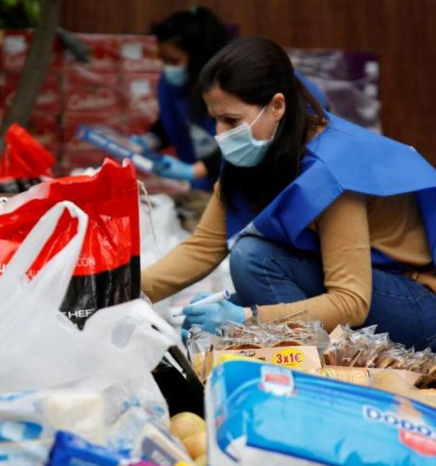

Casi doce millones de personas eran pobres o estaban en riesgo de exclusión antes de la emergencia
sanitaria. La cifra es superior a la anterior a la crisis económica de 2008 y ahora la covid empeora la
situación, según un informe. Antes de la crisis de la covid-19, en España un 25,3% de la población (11,87
millones de personas) se encontraba en riesgo de pobreza o exclusión social. La tasa de 2019 es superior a
la de 2008 (23,8%) y en términos absolutos representa un millón más. Pese a la tendencia descendente de los
últimos cinco años, coincidiendo con la recuperación económica, el país se aleja del objetivo marcado en la
Estrategia Europa 2020, por la que se comprometió ante el club comunitario a reducir en una década entre 1,4
y 1,5 millones el número de personas en esa situación. Por si fuera poco, aunque los datos recogidos en el
informe presentado este miércoles por la Red Europea de Lucha contra la Pobreza y la Exclusión Social
(EAPN-ES) no cuantifican los efectos del coronavirus, el documento pronostica que este no hará más que
acentuar la gravedad de ese escenario.
A veces cuesta ponerle rostro a la pobreza. “La percepción clásica habla de un perfil parecido a la miseria,
sin embargo, en el perfil real que emergió tras la crisis, el 81,3% son españoles, muchos tienen educación
media y superior, muchos trabajan, hay niños, mayores…”, comenta Llano. Rocío vive ahogada en la economía
del día a día. Con 40 años, reside junto a su marido y su hija de 13 en un humilde piso en Tres Barrios, en
Sevilla. En esta familia llegar a finde mes es una proeza. Como en su caso, casi la mitad de los españoles
(49,3%) tiene algún tipo de dificultad para lograrlo. Su marido, aquejado desde hace años por una dolencia
en el pie, dejó de trabajar tras el confinamiento y ella es la encargada de llevar dinero a casa. Ingresa
500 euros por cuidar a una pareja de octogenarios. “Todo ha ido a peor con la pandemia, pero mi situación
viene de lejos, desde que nos desahuciaron hace dos años”, lamenta.
Como en años anteriores, el indicador Arope muestra que la pobreza afecta de manera distinta según sexo,
edad, nivel educativo, discapacidad o territorio, entre otras. El riesgo de pobreza o exclusión alcanza a un
26% de las mujeres y a un 24,6% de los hombres; al 30,3% de los menores de 18 años; al 46,8% de las familias
monoparentales; y entre norte y sur de la Península hay diferencias de hasta 26 puntos (37,7% en Andalucía y
Extremadura frente al 11,7% de Navarra). Si la tasa Arope aumenta con respecto a 2008, también lo hacen
todos sus componentes: un 4,5% más el riesgo de pobreza, 9,7 millones de personas el año pasado (aquellos
cuya renta es inferior al 60% de la mediana de la renta del país por unidad de consumo, que en 2019 se situó
en 9.009,2 euros para hogares de una sola persona y en 18.919,3 para los que constan de dos adultos y dos
niños); un 63,6% la baja intensidad de empleo por hogar (personas menores de 60 años en edad de trabajar que
solo consiguen hacerlo por debajo del 20% de sus posibilidades en el último año); y un 30,6% la privación
material severa (quienes no pueden afrontar cuatro o más elementos de consumo de un total de nueve
considerados básicos, como mantener la vivienda a una temperatura adecuada o tener un ordenador).
